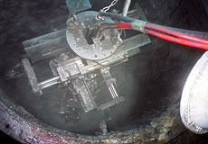
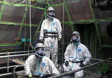
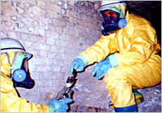
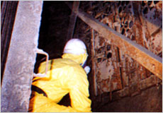
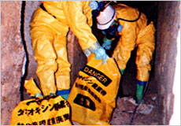
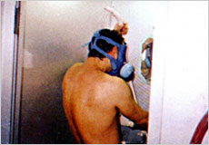
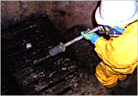
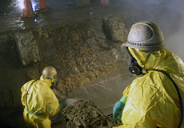

ダイオキシン汚染物除去
Dioxin Decontamination
ダイオキシン汚染物除去の特徴
Dioxin Decontamination
廃棄物焼却施設などを解体作業する前には
ダイオキシン類の高圧洗浄除去処理が必要です
解体工事を実施する廃棄物焼却施設は、ダイオキシン類で高濃度に汚染されています。 ですから、最優先しなくてはいけないのは「作業者へのダイオキシン類ばく露防止」と、「環境へのダイオキシン類の拡散防止」です。 そのために、汚染物の毒性や特徴に対する十分な理解と、処理方法や作業に使用する機器類についての正しい知識を持つことが大切です。

洗浄・はつりマシーン

ノズル付近
廃棄物焼却炉施設内作業における
ダイオキシン類ばく露防止対策要綱の概要
1. 作業区域の設定と隔離
焼却炉の火床面積が0.5m²以上、または、焼却能力が50kg/H以上の焼却炉を設置してある施設で、小型焼却炉から大型焼却施設までのほとんどが対象となっています。

サンプリング調査

電気集じん装置内部調査
2. 廃棄物焼却炉当の解体、改修に関わる計画届け
焼却炉の火床面積が2m2以上、または、焼却能力が200kg/H以上の焼却炉を設置された焼却炉等を解体、改修する場合は、工事開始の日の14日前までに、労働基準監督署に対して計画届を提出しなければなりません。

堆積灰等の除去

セキュリティーゾーンシャワー風景
3. その他の主な対策概要
- 汚染物のサンプリング調査
- 作業指導者の選任
- 空気中のダイオキシン類の濃度の測定
- 汚染物の除去
- 調査・測定結果に基づく解体方法の決定
- 発散減の湿潤化
- 使用する保護具の選定
- 廃棄、排水及び解体廃棄物の処理方法の適正化
- 特別教育の実施

付着物洗浄（火格子部）

付着物洗浄